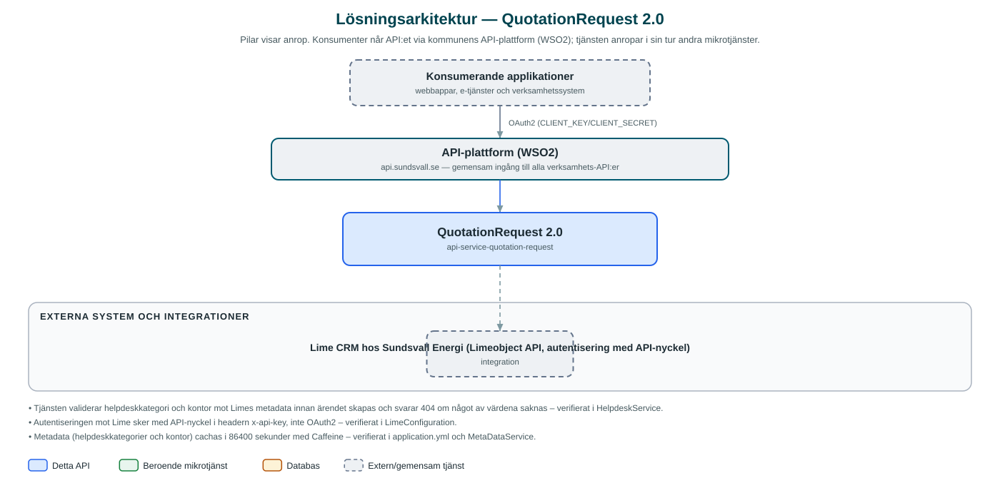

QuotationRequest
Skapar offertförfrågningar som helpdeskärenden i Sundsvall Energis Lime CRM och exponerar tillhörande metadata om kategorier och kontor.
Om API:et
QuotationRequest gör det möjligt för kommunens applikationer, till exempel e-tjänster, att skicka in offertförfrågningar till Sundsvall Energi utan att integrera direkt mot deras kundvårdssystem Lime CRM. API:et tar emot förfrågan med kontaktuppgifter och ärendeinformation och skapar ett helpdeskobjekt i Lime via Limeobject-API:et.
Innan ett ärende skapas validerar tjänsten att angiven helpdeskkategori och angivet kontor faktiskt finns i Lime, och API:et exponerar samma metadata så att anropande applikationer kan bygga korrekta formulär. Metadatan cachas i ett dygn för att avlasta Lime.
Tjänsten är tillståndslös och saknar databas – all information skapas och hämtas direkt i Lime CRM.
Det här gör API:et
- Skapa offertförfrågan – Tar emot en offertförfrågan och skapar den som helpdeskärende i Sundsvall Energis Lime CRM, med ärendets id som svar.
- Validering mot metadata – Helpdeskkategori och kontor kontrolleras mot Lime innan ärendet skapas; okända värden ger 404-svar.
- Metadata för formulär – Listar tillgängliga helpdeskkategorier och kontor så att anropande applikationer kan erbjuda giltiga val.
- Metadatacache – Kategorier och kontor cachas i 24 timmar med Caffeine för att minska belastningen på Lime.
API-dokumentation
API:ets samtliga resurser, parametrar och datamodeller finns beskrivna i en OpenAPI-specifikation som är hämtad ur källkodsförrådet. Den kan utforskas interaktivt i Swagger UI eller laddas ner som YAML. Programvaruförteckningen (SBOM) listar tjänstens samtliga tredjepartskomponenter med version och licens.
Teknisk dokumentation
Nedan beskrivs hur tjänsten är uppbyggd, vilka andra tjänster den anropar och vad som krävs för att driftsätta den. Informationen är härledd ur källkoden och dess konfiguration på GitHub.
Arkitektur

API:et är en mikrotjänst (Java 25, Spring Boot via kommunens gemensamma tjänsteplattform dept44 (8.0.8), byggd med Maven). Konsumenter når tjänsten via kommunens gemensamma API-plattform (WSO2) på api.sundsvall.se – tjänsten anropas aldrig direkt. Övriga integrationer som förekommer i koden: Lime CRM hos Sundsvall Energi (Limeobject API, autentisering med API-nyckel).
Teknikstack
- Språk: Java 25
- Ramverk: Spring Boot via kommunens gemensamma tjänsteplattform dept44 (8.0.8), byggd med Maven
- Övrigt: Feign-klient genererad från Limes API-kontrakt, Caffeine-cache för metadata, Resilience4j (circuit breaker mot Lime)
Beroenden till andra mikrotjänster
Inga anrop till andra mikrotjänster hittades i källkodens konfiguration.
Programvaruförteckning
Tjänsten bygger på 227 tredjepartskomponenter fördelade på 10 olika licenser. Till skillnad från tabellen ovan, som listar andra mikrotjänster, avses här de programbibliotek som ingår i bygget. Se programvaruförteckningen för hela listan.
Konfiguration och driftsättning
- URL och API-nyckel (x-api-key) för Lime CRM:s Limeobject-API
- Konfigurerbara connect- och read-timeouts mot Lime
- Cacheinställningar för helpdeskkategorier och kontor (24 timmars livslängd)
- Ingen databas – tjänsten är tillståndslös; anrop görs per kommun via municipalityId i API-vägen
Noterbart ur källkoden
- Tjänsten validerar helpdeskkategori och kontor mot Limes metadata innan ärendet skapas och svarar 404 om något av värdena saknas – verifierat i HelpdeskService.
- Autentiseringen mot Lime sker med API-nyckel i headern x-api-key, inte OAuth2 – verifierat i LimeConfiguration.
- Metadata (helpdeskkategorier och kontor) cachas i 86400 sekunder med Caffeine – verifierat i application.yml och MetaDataService.
- Klientkoden mot Lime genereras vid bygge från det incheckade Limeobject-kontraktet (seab-lime-api.yaml, Swagger 2.0).
Källkod
Källkoden är öppen och finns hos Sundsvalls kommun på GitHub. I källkodsförrådet finns även instruktioner för att klona, konfigurera och starta tjänsten i egen miljö.